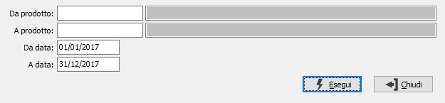

Stampa schede fiscali
Il programma effettua la stampa delle schede fiscali degli articoli, consentendo l'uscita su file oppure su stampante.

DA PRODOTTO: eventuale codice dell'articolo, presente in anagrafica Prodotti, da cui si desidera iniziare la selezione dei movimenti di magazzino. Confermando a vuoto, la selezione inizia con il primo prodotto valido. Sul campo è attiva la ricerca (F9) sull’anagrafica prodotti.
A PRODOTTO: eventuale codice dell'articolo, presente in anagrafica Prodotti, a cui si desidera terminare la selezione dei movimenti di magazzino. Confermando a vuoto, la selezione termina con l’ultimo valido. Sul campo è attiva la ricerca (F9) sull’anagrafica prodotti.
DA DATA: eventuale data da cui deve iniziare l’analisi dei movimenti di magazzino per gli articoli precedentemente selezionati. Confermando a vuoto, l’analisi inizia con il primo movimento valido.
A DATA: eventuale data con cui si desidera terminare l’analisi dei movimenti di magazzino per gli articoli precedentemente selezionati. Confermando a vuoto, l’analisi si conclude con l'ultimo movimento valido.